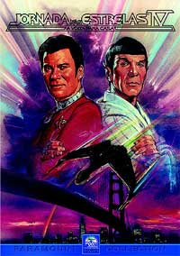
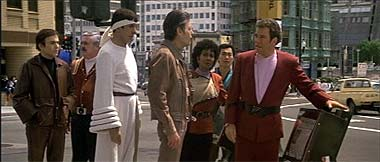
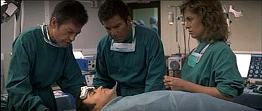

|
Por Luiz
Felipe do Vale Tavares
O
Filme
 "Jornada
nas Estrelas IV" foi o filme de maior sucesso da srie e
conseguiu o feito de atrair o grande pblico no-trekker. O
ingrediente foi a mistura exata de aventura, ao, humor e
fico cientfica, alm de uma mensagem ecolgica que estava
muito na moda em meados dos anos 80 (e at hoje).
Muitos fs alegam que esse filme que mais envelheceu de toda a
srie, principalmente pelo fato de ser muito anos 80.
Realmente esse fato no deixa de ser verdadeiro, mas a questo
no essa, ou seja, esse filme deve ser encarado hoje
exatamente como ele e sempre foi, um timo filme dos anos
80.
Nesse filme a tripulao da Enterprise (destruda no filme
anterior) usam uma nave Klingon (capturada tambm no filme
anterior) para voltar no tempo, ao sculo 20, para trazer ao
futuro duas baleias de uma espcie extinta para evitar um
desastre ecolgico no sculo 23.
Para a alegria dos fs, esse o filme que mais proporcionou
bons momentos para todos os personagens. Todos tem sua cota de
destaque e brilho, no ficando o filme restrito a Kirk, Spock e
McCoy. Tal feito nunca mais conseguiu ser repetido com o mesmo
sucesso em nenhum outro filme da srie, salvo o sexto filme que
tambm se esforou nesse aspecto.
Todo o elenco est em tima forma aqui, em clima descontrado e
com muita disposio. A adio da personagem da Dra. Gillian
muito bem vinda, interpretada com charme e vigor pela tima
atriz Catherine Hicks, e possibilitando o ponto de contato entre
os sculos 20 e 23.
Os efeitos especiais, embora poucos, so muito eficazes e, pelo
menos, so um passo frente dos efeitos dos dois filmes
anteriores. curioso notar que a qualidade dos efeitos decaiu,
ao invs de melhorar, aps o primeiro filme, que ainda hoje,
nesse aspecto, o melhor filme de Jornada. Os efeitos do
segundo filme eram muito inferiores aos do primeiro; e o terceiro
at um pouco inferior em relao ao segundo. Neste quarto filme
os efeitos melhoraram muito, mas caram em um abismo no quinto
filme. A partir do sexto melhoraram de novo.
A trilha sonora tambm causa divergncia entre os fs, pois h
aqueles que a consideram de tima qualidade, e outros que a
consideram a pior de toda a srie. Conciliando esses dois
pensamentos, a melhor posio a de que essa trilha sonora,
mesmo sendo a mais fraca da srie, de boa qualidade. A msica
de abertura excelente e passa uma sensao de novidade (ainda
mais porque as trilhas do segundo e terceiro filme eram
absolutamente a mesma). As demais msicas do filme migram entre
os patamares de boa a pssima. Um bom exemplo de m escolha de
msica a datada e fora de contexto Chekov's Run, que se
torna cada vez mais irritante quando revemos o filme.
Imagem
Aps os medocres DVDs dos filmes V, VI e "Generations"
no tocante imagem, a Paramount tomou vergonha e passou a
remasterizar os filmes de Jornada para que fossem
apresentados utilizando toda a capacidade de imagem que um DVD
capaz. Lembremos aqui que, nos EUA, os filmes de Jornada em
DVD foram lanados em ordem regressiva.
O filme IV apresentado em widescreen anamrfico na proporo
de 2,35:1. Sendo anamrfica, a imagem ganha mais linhas de
resoluo e pode ser vista em uma TV widescreen sem perda de
qualidade.
A imagem excelente, com tima nitidez e cores vivas e bem
definidas. A pelcula utilizada est em timas condies e
pouqussimas cenas possuem granulao acima da mdia
(normalmente as cenas mais escuras).

Som
O udio foi remixado em Dolby Digital 5.1 e o resultado muito
bom, embora pudesse ser melhor. Falta um pouco de agressividade no
som em algumas cenas.
Como esse um filme mais calmo, sem muitas exploses ou tiros e
com menos cenas no espao, realmente no h muito que se exigir
do som. Na maior parte do filme as caixas surround so usadas
principalmente para efeitos de ambiente ao invs de efeitos
tridimensionais; alm disso, o subwoofer trabalha muito pouco
tambm.
De qualquer forma um udio de boa qualidade e muito superior
ao fraco trabalho realizado pela Paramount na remixagem em Dolby
5.1 do quinto filme em DVD.
Extras
No incio dos anos 90 a Paramount lanou em VHS e LaserDisc uma
coleo de filmes famosos sob o rtulo Directors
Series. Eram edies de luxo onde o filme era apresentado em
widescreen, com apresentao especial pelo diretor antes e
depois do filme explicando diversos aspectos da filmagem. "Jornada
nas Estrelas IV" foi um dos filmes lanados nesse
pacote, com apresentao de Leonard Nimoy.
Para esse DVD a Paramount inseriu como bnus a apresentao de
Nimoy utilizada no Directors Series e sem dvida uma
excelente adio. Assistindo aos poucos 15 minutos da
apresentao de Nimoy, bastante detalhada, pode-se imaginar
quanta coisa o diretor ainda poderia falar sobre o filme. bem
possvel que na futura edio especial desse filme em DVD a
Paramount inclua uma trilha de udio com comentrios de
Nimoy.
Tambm esto presentes no DVD dois trailers de cinema.
Concluses
Um timo filme, entre os melhores da srie, e indispensvel
para qualquer coleo. Esse DVD traz a melhor apresentao de "Jornada
nas Estrelas IV" desde sua exibio nos cinemas e
talvez seja at superior, devido qualidade de imagem e
remixagem do som.

Um excelente trabalho da Paramount e altamente recomendado para os
fs e no-fs.
Ficha
Tcnica
Extras:
Menu interativo, Seleo de Cena, apresentao de Leonard
Nimoy e dois trailers de cinema
Vdeo:
Widescreen (2,35:1)
udio:
Ingls (Dolby Digital 5.1 Surround)
Legendas:
Ingls, Portugus e Espanhol
Ano de produo:
1986
Durao:
119 minutos
Data de Lanamento no Brasil (Regio 4)
20/08/2002
|